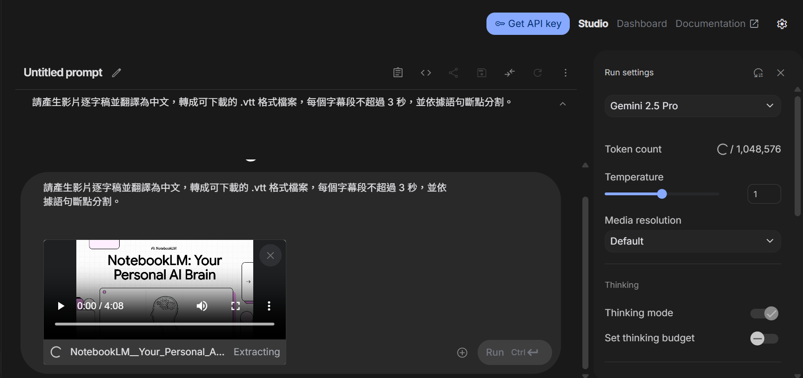
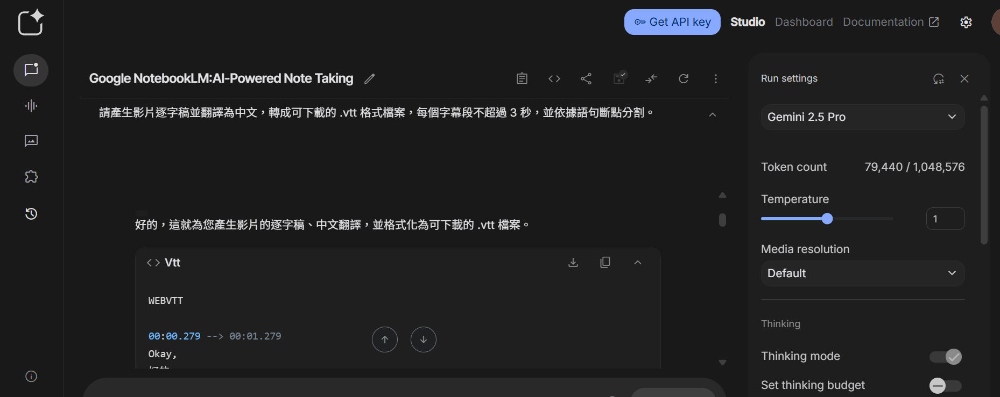
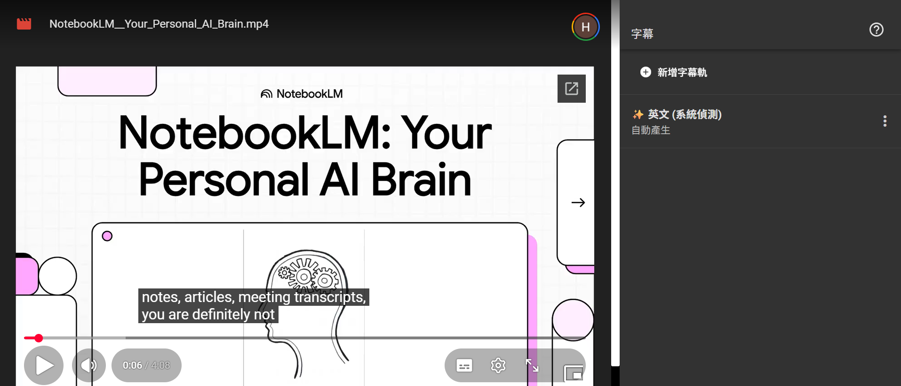
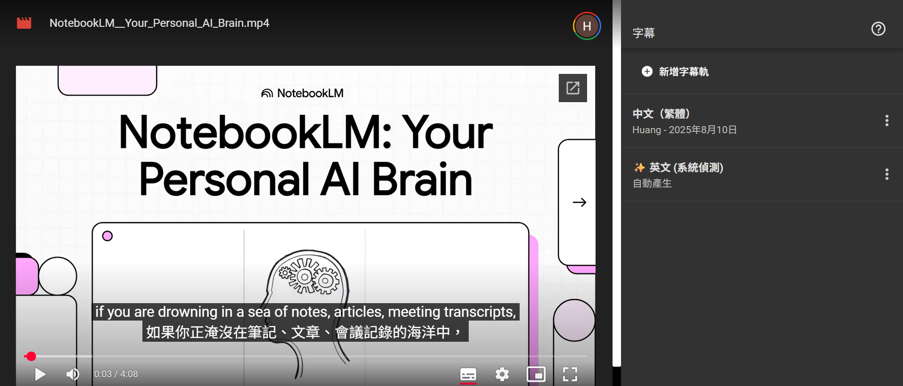
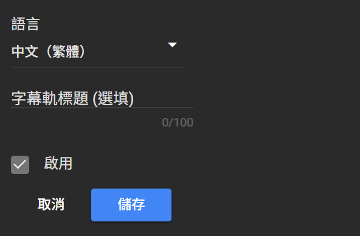

0. 課程資訊與教材
| 課程名稱 | EP29「會議紀錄字幕工作流」（AI 語音轉文字與會議紀錄工作流：Gemini × NotebookLM × Google AI Studio） |
|---|---|
| 頻道 | 生成式 AI 應用電台・晨學講堂 |
| 直播日期 | 2026/03/13（五）20:00–21:30 CST |
| 一句話先懂 | 把錄音檔 → 語音轉文字 → 逐字稿（含時間戳）→ 整理重點 → 會議紀錄 → 字幕（VTT）這一長串苦工，交給 AI 一步步自動化；學會之後再把提示詞升級成結構化 YAML 指令，讓輸出格式每次都精準重現。 |
| 教學結構 | 開場破題（苦哈哈紀錄員 → 主動駕馭 AI 高手）→ 四大部分：①AI 自動化會議 ②結構化指令的威力 ③用 YAML 打造內容 ④設計更複雜的 AI 工作流程。 |
| 示範案例 | 用 Google AI Studio 上傳影片、下指令「產生逐字稿並翻譯為中文、輸出可下載 .vtt、每段不超過 3 秒」，現場產出時間碼對齊的 VTT 字幕檔；並示範 Google 雲端「管理字幕軌」自動生成英文字幕，與 NotebookLM 的字幕/摘要功能。 |
🎬 錄影回放（可直接播放）
ppt/media/ 原圖，非影片抽幀）、課堂筆記 PDF 九大概念，以及課堂逐字稿（Copy of WEBVTT.vtt）逐句時間戳。引號內文字均取自逐字稿原句，未經改寫。1. 一頁看懂全課程
老師開場用一句話定調：把每次開完會「一個字一個字 key 字幕」的苦工，換成一條可重複執行的 AI 工作流；後半段再教你怎麼用結構化 YAML把這條工作流「寫死」成隨時可重複使用的指令。
2. 語音轉文字工具比較
逐字稿 01:52：「說到語音轉文字，市面上的工具真的超多的，你可能會想說到底要選哪一個？」老師先給一張總覽表，再用一張細節圖把每個工具的免費分鐘限制攤開來講清楚——這是選型最實際的依據。
| 工具 | 定位（PDF 筆記／簡報） |
|---|---|
| Gemini（一般免費版） | 適合短音訊快速轉錄；免費版上傳音訊總長度約 10 分鐘，單次音檔限制約 10 分鐘／次；付費版可達 3 小時以上。 |
| NotebookLM | 適合長資料整理分析；免費分鐘限制未公開，主要依「上傳檔案大小與 token 限制」，官方未公布固定分鐘數。 |
| Google AI Studio（Gemini API） | 可處理長音訊；無免費分鐘概念（API 計費），單次 prompt 音訊上限約 1M tokens ≈ 8.4 小時音訊／次。 |
| 雅婷逐字稿（Yating） | 常見逐字稿工具；免費分鐘限制約 3 分鐘試用，非常短，多數功能需購買時數。 |
| Microsoft Word 聽寫／轉錄 | 免費分鐘限制 300 分鐘／月；Microsoft 365 提供 300 分鐘轉錄配額。 |
| Otter.ai（Free Basic） | 免費分鐘限制 300 分鐘／月，單次音檔限制 30 分鐘／次錄音，超過 30 分鐘需切段或升級方案。 |
3. 錄音轉逐字稿＋時間戳
逐字稿 01:42：「第一，先把聲音錄下來；第二，丟給 AI 做語音轉文字。」錄音檔上傳至 AI 工具後即可生成完整逐字稿並附上時間戳——這是整條工作流的第一個關卡。
3.1 逐字稿格式規則（官方簡報 p7）
- 逐句顯示語音內容，不要整段黏在一起。
- 每句加上時間戳記，方便之後回頭核對錄音原文。
- 時間格式固定為 00:00:00，時：分：秒補零。
- 時間標示放在句首，一眼就能定位到錄音的哪一秒。
3.2 轉錄 Prompt 範本（課堂筆記 PDF・概念二）
4. 逐字稿整理與會議紀錄生成
拿到逐字稿只是半成品——逐字稿通常包含大量口語內容（語助詞、重複句、離題閒聊），要先整理成「問題與決策」，才能再轉成一份能拿去交差的正式會議紀錄。
4.1 整理成問題與決策事項
- 刪除語助詞與重複語句（嗯、啊、就是說、然後然後）。
- 依照議題分段整理，把跳來跳去的討論收攏到同一個主題底下。
- 整理問題與回答的配對關係，誰問了什麼、誰回答了什麼。
- 產生重點摘要，讓沒開會的人也能三分鐘看懂。
4.2 會議紀錄生成
整理完成後，再用一條指令把它轉成正式格式的會議紀錄——匯入逐字稿內容、AI 整理討論重點、生成正式紀錄、可輸出為文件或報告。
| 欄位 | 對應內容 |
|---|---|
| 會議名稱 | 從逐字稿主題或使用者補充資訊帶入 |
| 時間 | 錄音檔的日期／起訖時間 |
| 出席人員 | 逐字稿中被提及或辨識出的講者 |
| 討論事項 | 整理後的問題與主要回覆（4.1 的成果） |
| 決議事項 | 整理後的重要決策（4.1 的成果） |
5. 字幕（VTT）生成與 YouTube 流程
逐字稿 02:34：「接下來，我們就來實際操作一次，看看字幕到底是怎麼變出來的。」同一份逐字稿只要換個輸出格式，就能變成影片字幕——這一節示範用 Google AI Studio 直接產出 VTT。
5.1 斷句規則：每段字幕不超過 3 秒
官方簡報原文指令（可存成 System Instructions 直接套用）：
5.2 Google AI Studio 實機示範


逐字稿 02:55：「接下來，哇，神奇的事情就發生了，AI 馬上就會開始工作，把你剛剛下的指令變成一個時間點都對得好好的、格式也完全正確的 VTT 字幕檔，隨時等著你下載。」最後一步「把這個檔案上傳到你的影片平台，你看，完美同步的中文字幕就這樣出現了」。
5.3 YouTube／雲端字幕軌流程



- 影片上傳至 Google 雲端／YouTube。
- 點選「管理字幕軌」，等待約 3–5 分鐘系統自動偵測生成英文字幕。
- 需要中文字幕時，改用 Google AI Studio 上傳影片＋下達 5.1 的指令，取得翻譯後的 .vtt。
- 回到字幕軌管理，新增字幕軌、選語言、貼上或上傳 .vtt 檔、啟用、儲存。
- AI 生成完成後也可先下載為 .txt 編輯校對，再存回 .vtt 格式上傳。
6. NotebookLM 會議分析與自動化系統
單集操作示範講完後，官方簡報把整個工作流收斂成兩張總覽圖：一張是 NotebookLM 專責的「會議分析」，一張是把六個部件串起來的「AI 會議紀錄自動化」系統圖。
6.1 NotebookLM 會議分析（課堂筆記 PDF・概念七）
NotebookLM 適合針對已經很長的逐字稿做摘要與決策抽取，不需要再手動翻找整份逐字稿。
6.2 完整 AI 會議自動化流程圖（課堂筆記 PDF・概念八、九）
把前面每一段的指令串起來，就是一條可重複執行的自動化流程：
最終目標則是把這整條路徑固定成系統：
| 系統組件 | 對應本集內容 |
|---|---|
| AI 語音轉文字 | 第 2、3 章：工具選擇＋逐字稿＋時間戳 prompt |
| AI 摘要與會議紀錄 | 第 4 章：整理問題決策＋生成正式會議紀錄 |
| AI 字幕翻譯 | 第 5 章：VTT 生成＋YouTube／雲端字幕軌 |
| 建立會議知識資料庫 | 第 6.1 節：NotebookLM 彙整多份逐字稿供日後查詢 |
7. 進階：從一句提示詞到結構化 YAML 指令
逐字稿 03:28：「剛剛那套流程很棒對不對？超方便的，但，問題來了——如果你想要更精準的控制呢？如果你希望每一次每一次的結果都一模一樣、完美重現呢？又或者如果你不是處理一部影片，而是要處理一百部影片，那該怎麼辦？」這是本集逐字稿裡真實延伸出的第二條主線：把口語提示詞升級成結構化 YAML 指令。
7.1 為什麼要 YAML
逐字稿 03:44：「這時候我們就需要從聊天模式升級到寫程式的思維了，這個答案就是 YAML。」老師給的比喻——03:48：「你可以把它想像成⋯⋯像是給 AI 的一本說明書，或食譜。」
- YAML 是人跟機器都能看懂的語言，用結構化、像填表格一樣的方式下達指令。
- 可以下達非常精準、而且可以重複使用的指令，叫 AI 做比較複雜的事情。
- 核心價值：沒有模糊的空間，每一次執行結果都可預期、可重現。
7.2 什麼時候用、什麼時候不用
| 情境 | 建議 |
|---|---|
| 任務有很多步驟 | 用 YAML——定義清楚每一步要做什麼 |
| 需要定義報告的架構 | 用 YAML——章節骨架寫死，每次產出結構一致 |
| 想建立可重複使用的模板 | 用 YAML——這是它的「超能力」所在 |
| 只是要問個問題、做個簡單翻譯 | 不用 YAML——「殺雞用牛刀」，口語提示詞就夠 |
逐字稿 04:39 的對比示範最直白：
7.3 五大應用實例（逐字稿 04:58–07:17 逐一示範）
- 文字生成：用 YAML 命令 AI 寫一篇關於數位治理的雙語文章，直接規定骨架要包含「背景、挑戰、解決方案」幾個章節，確保每次產出都符合專業格式。
- 圖像生成：不是隨便丟關鍵字，而是用 YAML 精準指定主題（未來 AI 城市）、風格（賽博龐克）、燈光（霓虹燈感）、解析度（4K），讓畫面真正符合創意想像。
- 資訊圖表生成：用 YAML 定義標題、要比較哪幾個工具、比較的指標有哪些——數據視覺化不再需要開 Illustrator 弄半天，把結構定義好 AI 就能搞定。
- 報告編排：把 YAML 當成固定模板，先把所有章節都規劃好，確保每一份 AI 產出的報告都有一樣的專業結構，對需要大量產出標準化文件的團隊是救星。
- AI Agent 工作流：想像自己是專案經理，手下有三個 AI 員工——用 YAML 分配任務，叫研究員 AI 去找資料，交給分析師 AI 去挖出洞見，最後由寫手 AI 把報告寫出來，實現全自動化的團隊合作。
8. 課後自我檢核（照本集實際教學內容）
都對應本集官方簡報＋逐字稿真的講過的內容。可到互動技能地圖逐項打勾。
| 主題 | 你應該做得到… |
|---|---|
| 🎙️ 工具選擇 | ① 依「錄音長度」與「使用頻率」選對 Gemini／NotebookLM／AI Studio／Otter 等工具 ② 說出各工具免費分鐘限制的大致範圍 |
| 📝 逐字稿與整理 | ① 用時間戳 prompt 產生逐字稿 ② 用兩段式指令把逐字稿整理成問題／回覆／決策 ③ 再生成含五要素的正式會議紀錄 |
| 🎬 字幕製作 | ① 記得「每段字幕不超過 3 秒、依語句斷點分割」的規則 ② 會用 Google AI Studio 產出 WEBVTT 格式字幕 ③ 知道雲端「管理字幕軌」3–5 分鐘自動產生英文字幕的路徑 |
| 🤖 自動化與 YAML | ① 說出 AI 會議自動化系統的四個組件 ② 判斷什麼情境該用 YAML、什麼情境不必 ③ 能寫出 task/input/output 的簡單 YAML 指令 ④ 說出 YAML 五大應用（文字／圖像／資訊圖表／報告／AI Agent 工作流） |
9. 資料來源與製作說明
- 原始教材（三份真實素材）：①《EP29語音轉會議記錄筆記.pdf》課堂筆記（九大概念＋九條 Prompt 範本）；②《EP29_會議紀錄字幕工作流.pptx》官方課程簡報（16 頁，含真實內嵌截圖）；③《Copy of WEBVTT.vtt》課堂錄影完整逐字稿（帶時間戳，全長 07:34，老師開場破題到收尾提問全程口白）。
- 截圖來源：本頁 7 張截圖直接取自官方簡報檔內嵌的原圖（下載 .pptx 後解壓
ppt/media/取原始圖檔），包含簡報封面、工具分鐘限制比較圖、Google AI Studio 逐字稿/VTT 產出畫面、YouTube／雲端字幕軌管理畫面等；非本頁製作團隊另行對影片抽幀，而是官方簡報作者原本就內嵌的操作示範截圖。 - 逐字稿使用方式：凡標註 mm:ss 的引號句子，均為逐字稿原句直接引用，未經改寫或潤飾；第 7 章「進階：結構化 YAML」為逐字稿真實講述、但簡報文字檔中未收錄對應頁面的內容，已於該章節內特別註明。
- 誠實聲明：本集官方簡報標題聚焦「會議紀錄字幕工作流」，但課堂逐字稿顯示老師實際授課內容分兩段——前半段（00:00–03:25）為會議紀錄字幕自動化五步驟，後半段（03:25–07:34）延伸講解結構化 YAML 指令與五大應用；本頁如實按逐字稿實際順序與比重整理，未省略後半段內容。未下載完整課堂錄影（約 652MB）另行抽幀——因 PDF 筆記＋官方簡報原圖＋完整逐字稿三者已足以逐句還原課程內容，故未執行影片抽幀這一步；若讀者需要對照畫面中未被簡報截圖涵蓋的操作細節，仍可使用第 0 章內嵌的錄影回放 iframe 直接播放原始影片核對。
- 介面參考：互動技能地圖頁沿用本站 EP44～EP46 的卡片式多層導覽與遊戲化進度設計。